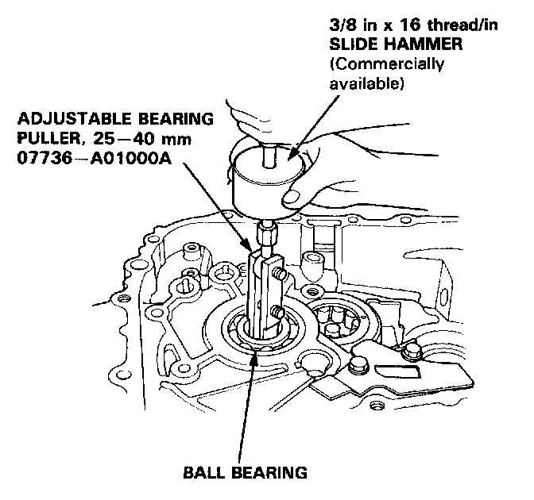
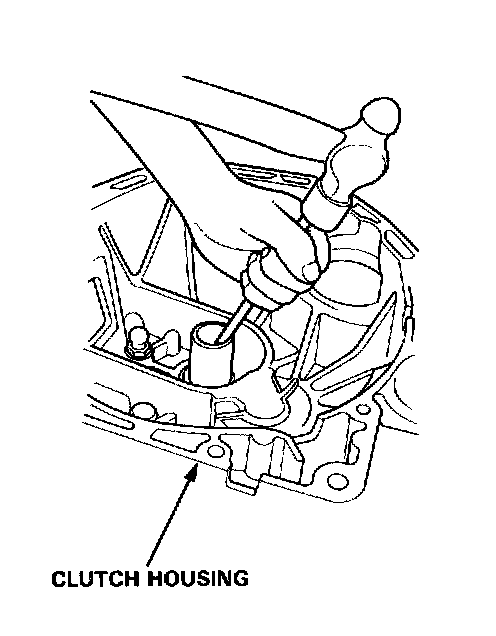
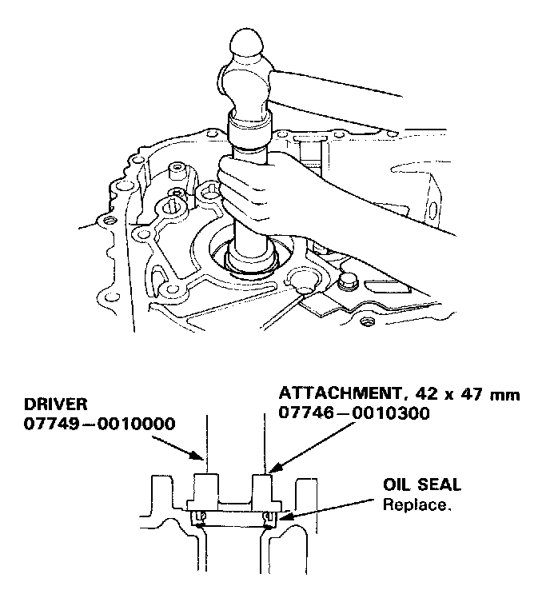
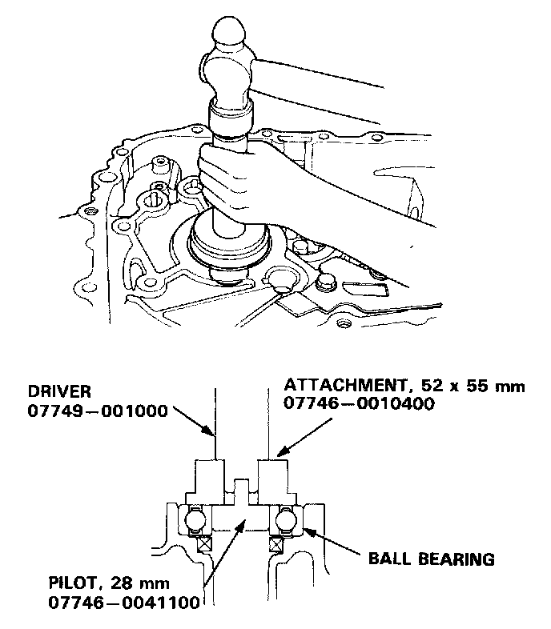
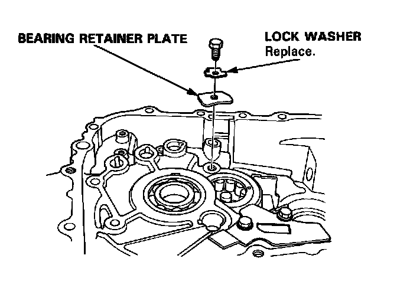
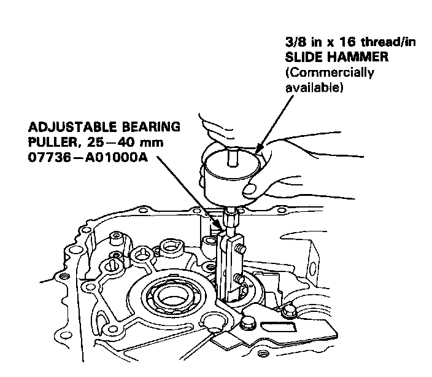
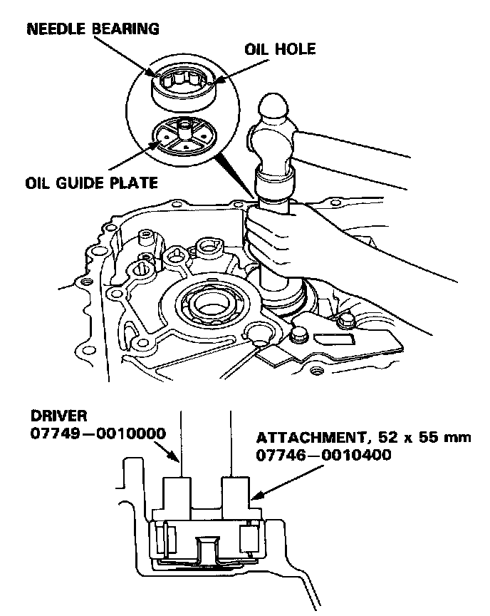
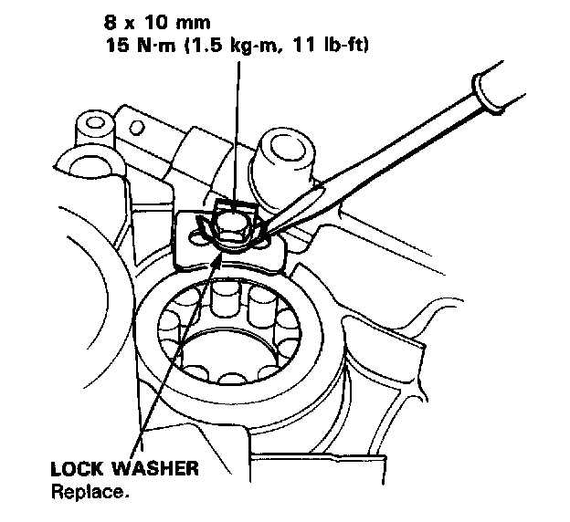

Clutch Housing Bearing
Clutch Housing Bearing ReplacementMainshaft

1. Remove the ball bearing using the special tools as shown in image.

2. Remove the oil seal from the clutch housing.

3. Drive the new oil seal into the clutch housing using the special tools as shown in image.

4. Drive the ball bearing into the clutch housing using the special tools as shown in image.
Countershaft

1. Bend the tab on the lock washer down, then remove the bolt and bearing retainer plate.

2. Remove the needle bearing using the special tools as shown in image, and remove the oil guide plate.

3. Install the oil guide plate, then drive the needle bearing into the clutch housing using the special tools as shown in image.
NOTE: Position the needle bearing with the oil hole facing up.

4. Install the bearing retainer plate and new lock washer, then bend the tab against the bolt head.